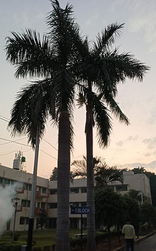

Royal Palm Tree
Scientific name = Roystonea regia
It is a large palm which reaches a height of 20-30 metres. The trunk is stout, very smooth and grey-white in colour with a characteristic bulge
below a distinctive green crownshaft.Root nodules containing Rhizobium bacteria have been found on R. regia trees in India. The presence of rhizobia-
containing root nodules is usually associated with nitrogen fixation in legumes; this was the first record of root nodules in a monocotyledonous tree.
In addition to evidence of nitrogen fixation, the nodules were also found to be producing indole acetic acid, an important plant hormone.
It has been planted throughout the tropics and subtropics as an ornamental.The seed is used as a source of oil and for livestock feed.
Leaves are used for thatching and the wood for construction.The roots are used as a treatment for diabetes.